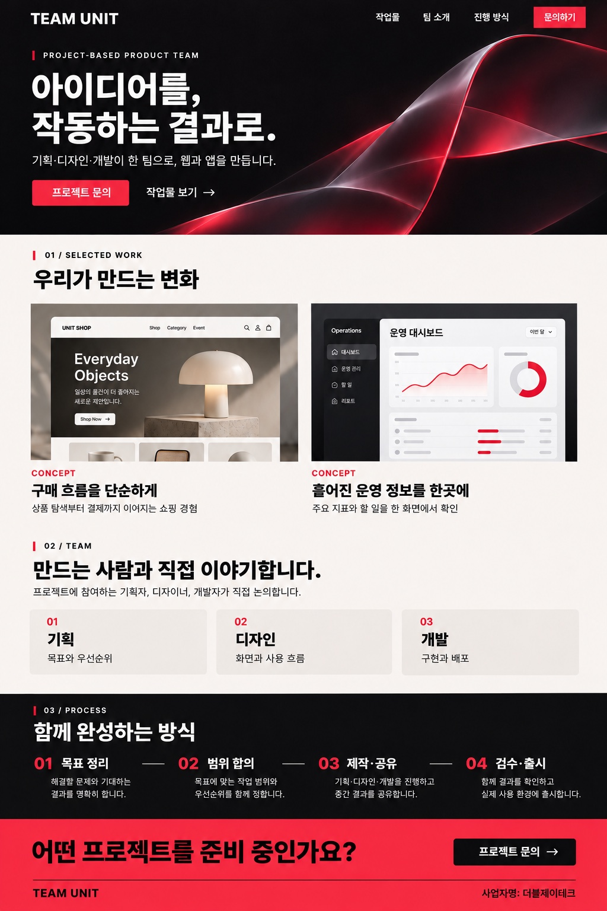

CONCEPT / COMMERCE
구매 흐름을 단순하게
상품 탐색부터 결제까지 이어지는 쇼핑 경험
01 / SELECTED WORK
02 / TEAM
프로젝트에 참여하는 기획자, 디자이너, 개발자가 직접 논의합니다.
목표와 우선순위
화면과 사용 흐름
구현과 배포
03 / PROCESS
해결할 문제와 기대하는 결과를 정합니다.
작업 범위와 우선순위, 일정을 함께 정합니다.
기획·디자인·개발을 진행하며 중간 결과를 공유합니다.
결과를 함께 확인하고 사용 환경에 맞게 출시합니다.
04 / CONTACT